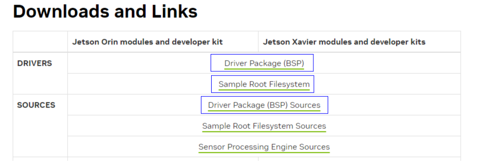
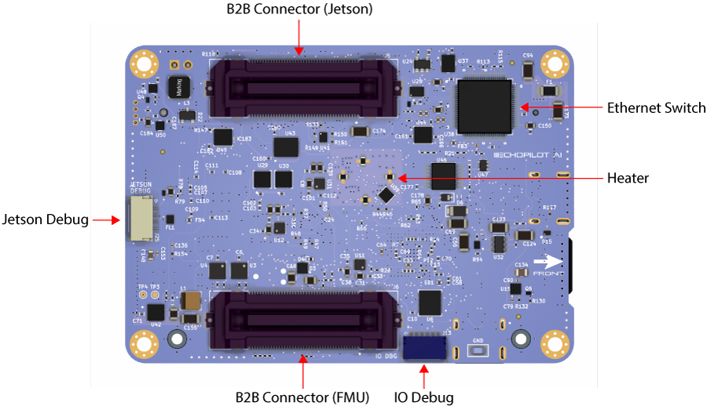
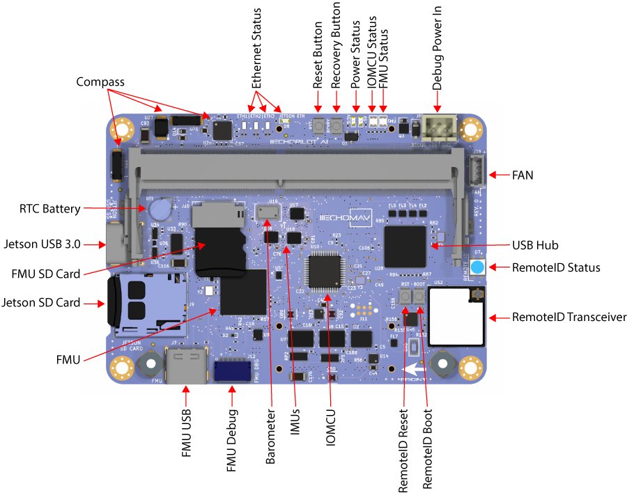

Compiling L4T for the Jetson Orin NX and Orin Nano on the EchoPilot AI¶
Instructions for customizing the device tree and compiling the kernel for the Orin NX on EchoPilot AI¶
When a Jetson Orin NX or Orin Nano module is included with an EchoPilot AI purchase, it is flashed with a custom Linux for Tegra (L4T) image which includes support for the hardware configuration of the EchoPilot AI. If you wish to build/update the kernel for use with the EchoPilot AI, the instructions below will provide the information and files you need to ensure your custom image remains fully compatible with the EchoPilot AI hardware. When compared to a standard Nvidia development carrier board, the primary differences in the EchoPilot AI hardware are summarized below. In the build steps below you will be applying a customized DTB file which applies these fixes:
The EchoPilot AI is functionally similar to an Nvidia Xavier NX (P3509) development kit board, with a few exceptions. - The EchoPilot AI does not have the EEPROM on board which Nvidia carrier boards use for internal board id storage. (EchoPilot AI does have an AT24CS01-STUM unique ID EEPROM at I2C 0x58 on the Jetson I2C bus.). - As of L4T 35.4.1, the display(hdmi) must be disabled as the EchoPilot AI is headless, otherwise the OS will not fully boot. - By default, the serial port routed to the Iridium connector (J10) is disabled. Our custom dtb enables it.
Warning
These instructions were developed and tested on Ubuntu 20.04 LTS. We recommend using a physical machine running Ubuntu 20.04 LTS.
What you will doing:
- Download and setup the necessary files
- Replace a .dtb file
- Generate the image and flash the device
So buckle up and let's get started.
Download and Setup Necessary Files¶
Note that you will need to create an NVIDIA developer account and login to download, so if you do not have a developer account please set that up before proceeding. Next you will need to download three packages from Nvidia: Driver Package (BSP), Sample Root Filesystem and Driver Package (BSP) Sources.
These instructions were developed using Jetson Linux 35.4.1, but generally we recommend you download the latest available.
The files to download are highlighted in blue below: 
Note
The instructions below assume that the downloaded files are downloaded to the ~/Downloads/ folder.
Extract Driver Package (BSP)¶
Note: the filename below will be different if you download a different version.
Extract sample Root File System (Sample Root Filesystem)¶
Extract contents into Linux_for_Tegra/rootfs/.
sudo tar xpf ~/Downloads/Tegra_Linux_Sample-Root-Filesystem_R35.4.1_aarch64.tbz2 -C ~/Orin/Linux_for_Tegra/rootfs/
cd ~/Orin/Linux_for_Tegra
sudo ./apply_binaries.sh
Note
If apply_binaries.sh failes, you host computer may be missing some dependencies. Please make note of the missing packages and install them using sudo apt-get install XXXXX. Before apply_binaries.sh`` is run, the content in “Linux_for_Tegra/rootfs/” is purely Ubuntu. Afterapply_binaries.sh, the “rootfs/” will contain NVIDIA content, e.g, drivers for the GPU and some firmware.
Create the default user¶
This step allows you to configure your username, password and hostname and also accept the license.
Get the EchoPilot .dtb file¶
The file you will need to replace is a device tree binary (.dtb) file. This file can be obtained from the echopilot_ai_bsp repository https://github.com/EchoMAV/echopilot_ai_bsp. Use the steps below to clone this repo and install this file using the providing installation script:
Clone the repo:
Checkout the appropriate branch for your EchoPilot AI board revision. For example, EchoPilot AI Rev1A hardware: Run the install script to copy the dts file into your Linux_for_Tegra folder. The usage is./install_l4t_orin.sh [Path to Linux_for_Tegra], e.g.:
Ensure this script completes with no errors before proceeding with flashing.
Flash device¶
Important
While not shown in the images below. The EchoPilot AI should be plugged into a Carrier Board for these steps, as that is how the Jetson module is powered.
Important
The Jetson Orin requires a NVMe M.2 SSD drive. Before proceeding, you should have a drive installed into the EchoPilot AI and secured with a M2x3mm wafer head screw.

- Plug in a micro usb cable to the Jetson Debug port (J25) on the EchoPilot AI. Refer to the image below for the Jetson Program / Debug connector on the left side.
 2. Hold the recovery button down as power is applied. (see image below for location of the recovery button).

3. Apply power via the XT30 connector on the carrier board, and release the recovery button after a few seconds.
4. Build the image and flash device using the command below:
cd ~/Orin/Linux_for_Tegra/
sudo ./tools/kernel_flash/l4t_initrd_flash.sh --external-device nvme0n1p1 -c tools/kernel_flash/flash_l4t_external.xml -p "-c bootloader/t186ref/cfg/flash_t234_qspi.xml" --showlogs --network usb0 p3509-a02+p3767-0000 internal
Note
The first time you run this script, your system may be missing dependencies. The script will tell you what is missing, please install them using sudo apt-get install XXXXXX.
```
Note
On our own host Linux systems, we have observed that the Nvidia script above may sometimes timeout due to a USB write error. This problem appears to be related to USB autosuspend. If you encounter similar errors, please try this command to disable autosuspend and then attempt flashing again.
Note
The flash command above builds the image and flashes. Once the image is built the first time, you can flash additional boards without the time consuming image rebuild each time. Add the --flash-only argument to the l4t_initrd_flash.sh script.